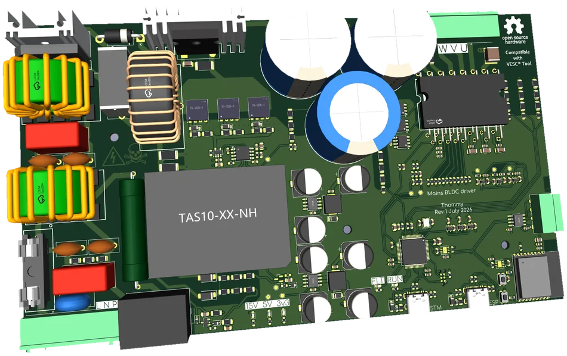

Work 04 Mains drive
A compressor drive that
keeps the grid happy.
230 V AC straight into a VESC-compatible HVAC drive, with a CCM PFC front end so the current draw is a sine wave rather than a crime — and IEC 61000-3-2 in the requirements from the first schematic.

01The brief
Compressors and HVAC blowers are the boring half of electrification, and they are where the volume is. This board takes 230 V AC from the wall, rectifies it, corrects the power factor and drives a three-phase compressor motor — while staying inside the VESC ecosystem, so the firmware, tooling and configuration experience are already solved problems.
The interesting requirement is not the motor. It is the grid: a diode bridge and a big capacitor draw current in ugly pulses, and IEC 61000-3-2 has opinions about that. Active PFC turns the input current into a sine wave in phase with the voltage, which is both a compliance story and a smaller bus capacitor.
02Specification
| Input | 230 V AC single phase |
|---|---|
| HV bus | ≈ 325 V DC nominal |
| PFC | TI UCC28180D — CCM boost PFC |
| Power bridge | Infineon IKCM10H60GAXKMA1 IPM — 10 A / 600 V |
| MCU | STM32F405RGTx running VESC firmware |
| Connectivity | VESC Express (ESP32) — Wi-Fi, BLE, CAN bridge |
| CAN | Dual isolated interfaces |
| USB | USB Type-C for VESC Tool |
| Debug | Tag-Connect SWD |
| Sensing | Phase current U/V/W · bus and phase voltage |
03Architecture
The design is split into ten hierarchical sheets rather than one enormous schematic: power in, PFC, phases, filters, isolator, LV power, MCU, CAN and the VESC Express module. Each sheet can be read, reviewed and reused on its own — and a reviewer looking for the creepage problem only has to read the sheet where creepage lives.
The power path is deliberately conventional: EMI filter, inrush limiting and a bridge rectifier into a ~325 V bus; a UCC28180 CCM PFC boost stage; then an Infineon IKCM10H60 IPM — 10 A, 600 V, with gate drivers and bootstrap integrated — driving U/V/W. What is not conventional is how carefully the control domain is kept away from the mains domain.
04Decisions worth defending
Isolation is a boundary, not a suggestion. Gate signals and fault lines cross through a dedicated isolator sheet, and the CAN interfaces are isolated too. On a mains product the barrier is the product; everything else is a circuit.
PFC first, motor second. The PFC stage is sized for the compressor's real load profile, not for a resistive test load, because the harmonic limit is about current shape at part load as much as at full load.
VESC Express instead of a bespoke cloud. An ESP32 module provides Wi-Fi, Bluetooth and a CAN bridge, so commissioning and monitoring happen through tools that already exist. The board does not need to invent an app.
Serviceability. Tag-Connect SWD, status LEDs and a USB-C port for VESC Tool, because the first person to debug this board should not need to solder to it.
05Compliance targets
| IEC 61000-3-2 | Harmonic current emissions — addressed by active PFC |
|---|---|
| IEC 60335-2-34 | Particular requirements for motor-compressors |
| EN IEC 63000 | RoHS technical documentation |
06The honest part
The board is designed against IEC 61000-3-2 (harmonic current emissions), IEC 60335-2-34 (motor-compressors) and EN IEC 63000 (RoHS documentation). Active PFC substantially helps with the first; it does not grant certification. CE marking has to be earned by the integrating party with measurement, and the repository says exactly that.
The same goes for the voltage: the DC bus sits at roughly 325–400 V from rectified mains. This is a board to be handled by people who already know why the capacitor bank is the last thing you touch.
